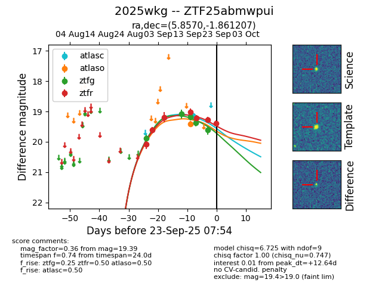
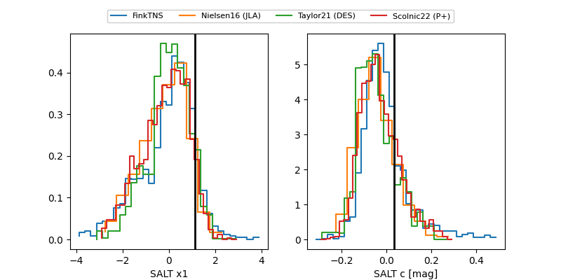

FINK: ZTF25abmwpui
Lasair: ZTF25abmwpui
ALeRCE: ZTF25abmwpui
TNS: 2025wkg
YSE: 2025wkg
ZTF25abmwpui (ztf,fink)
2025wkg (tns,yse)
equatorial (ra, dec) = (5.8570,-1.86121)
galactic (l, b) = (106.8784,-63.85649)


last atlasc=19.14, atlaso=19.41, ztfg=19.62, ztfr=19.39
1 atlasc, 1 atlaso, 5 ztfg, 7 ztfr detections